The top of your screen now does it all.
A dynamic island for Windows: music, system stats, FPS, WhatsApp, weather and shortcuts show up at the top of your screen and disappear when you don't need them.
Free · Windows 10 and 11 (64-bit) · 72 MB
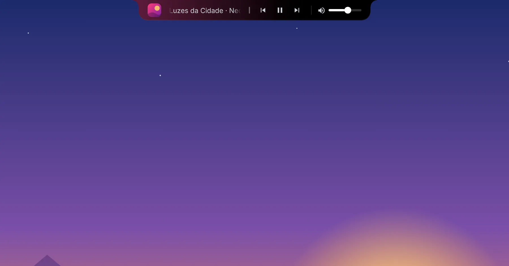
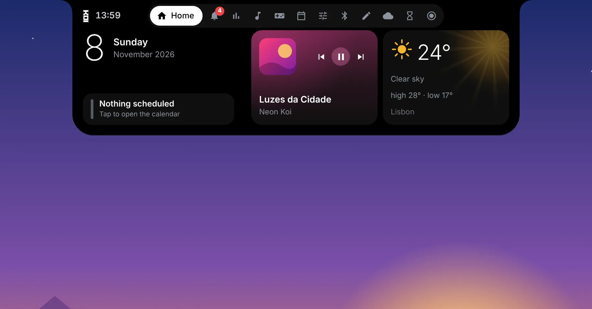
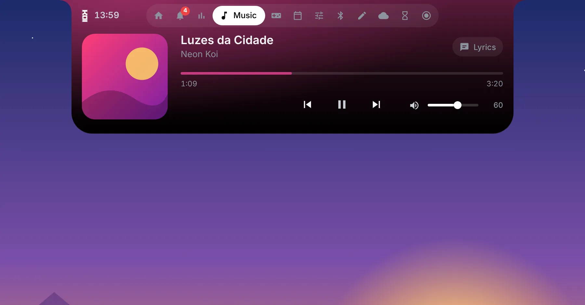
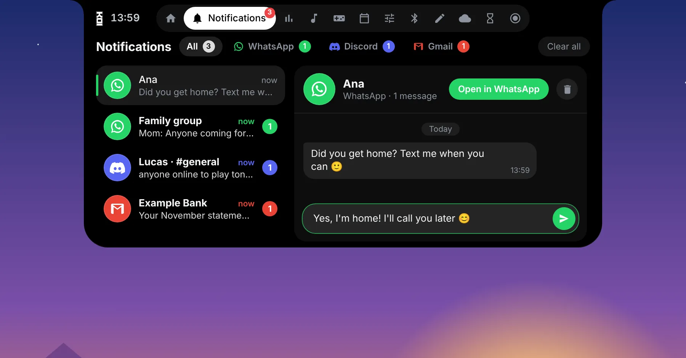
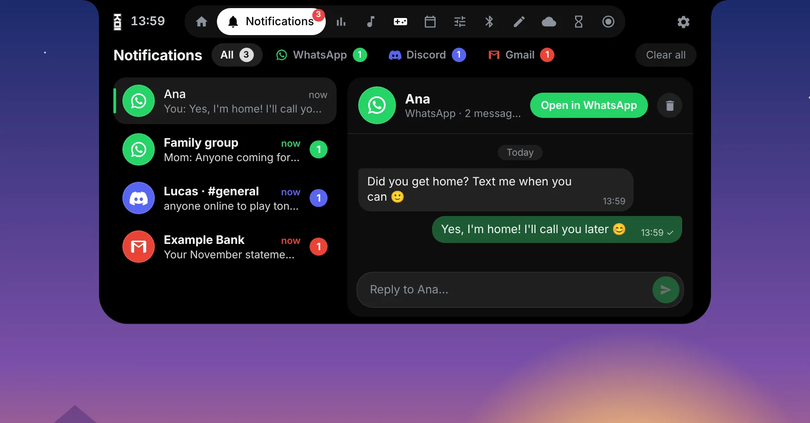
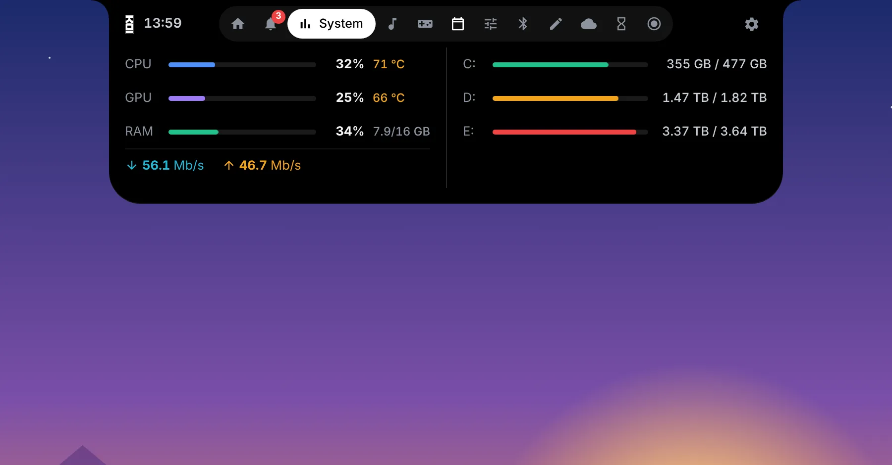
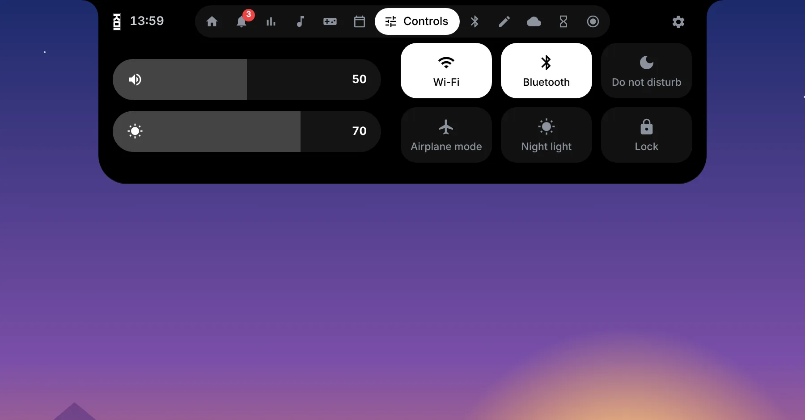
Features
Everything is one hover away.
Hover over the top of the screen and the island opens. Move away and it goes back to a discreet pill.
Music everywhere
Cover art, controls and the player's own volume (Spotify and others), with the album color tinting the island.
Live system stats
CPU and GPU usage and temperature, RAM, network and disks, with smooth bars that respond instantly.
Real in-game FPS
FPS counter with 1% lows, measured like professional overlays, right next to your music.
WhatsApp, Discord and Gmail
Messages in one inbox, with photos and stickers. Reply to WhatsApp and Discord without leaving the island.
Home with widgets
Resize, drag and build your Home with up to two large tiles. The island grows to fit everything.
Animated weather
Animated sun, rain, snow and storms on the tile, with highs, lows and the next few hours.
Quick controls
Volume, brightness, Wi-Fi, Bluetooth, do not disturb, night light, airplane mode and lock screen.
Screen recording
Record up to 1440p at 60 fps, with PC audio and your mic, straight from the island.
Calendar and notes
Events, Brazilian holidays and quick notes, always one hover away.
Minimal mark
Prefer a clean screen? The island becomes a thin line with just the numbers, in the color you pick.
Alerts that matter
High temperature, low battery, charger plugged in and even a reminder to drink water.
Your way
Theme, transparency, 14 light effects, 18 sounds and which tabs show up. It hides by itself in full screen.
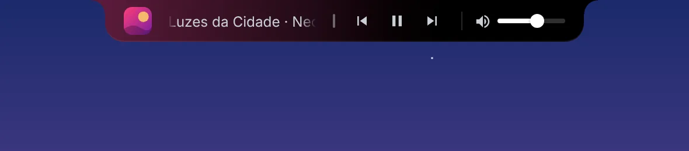
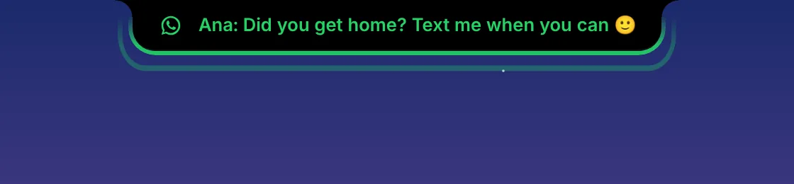
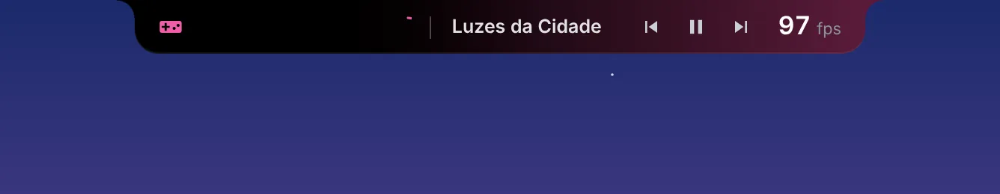
Inside
A tab for everything.
Open the island and go through the tabs. Pick in settings which ones show up.
New in 1.4
Your conversations, at a glance.
The Notifications tab is now an inbox: conversations on the left, messages on the right.
- Reply from the island to WhatsApp and Discord chats, just like in the Windows notification.
- Discord and Gmail arrive alongside WhatsApp, each with its own color, sound and effect.
- Gmail opens the right email when you click the alert or the message.
- Laptop battery on the island, with a charging animation and low-battery alerts.
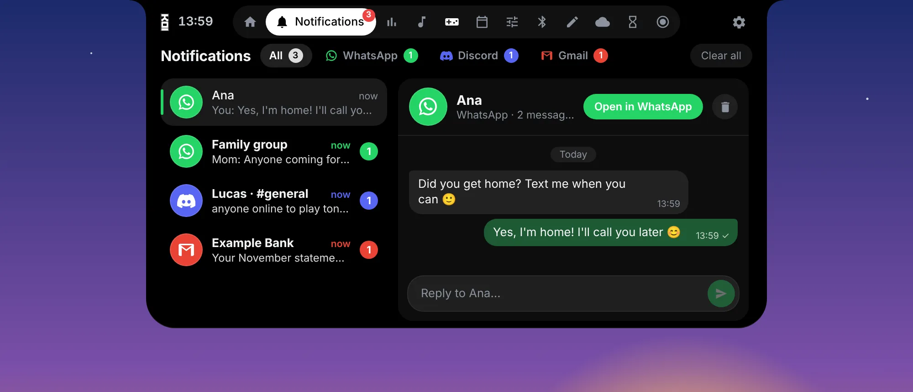
Home
Your Home, your size.
Hold a tile to start editing, just like phone widgets.
- Pull the sides to make a tile wide, tall or large. With two large tiles, the island gets wider.
- Drag to rearrange tiles, or drop them in the trash. Empty spots get a + to pick a tile.
- Large tiles show more: cover and music controls, forecast for the next few hours.
- The weather animates with the conditions outside: sun, rain, snow, storms.
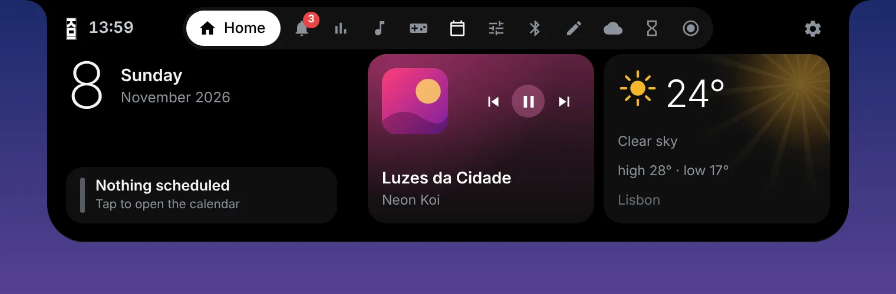
Themes
Dark, light or glass.
Pick the look that matches your Windows. On Automatic, the island follows the system's light or dark mode.
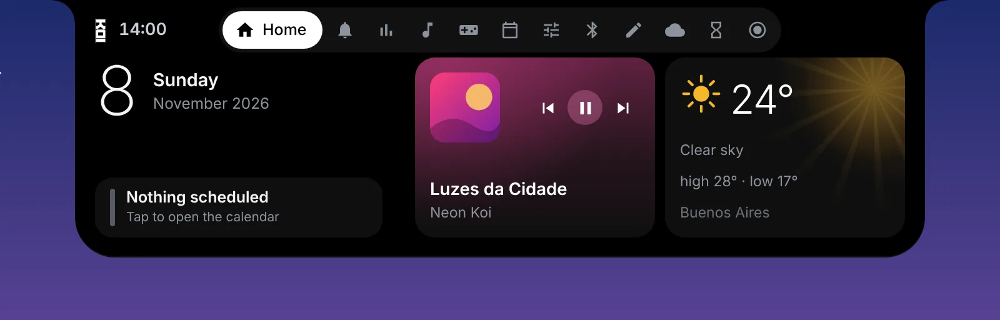
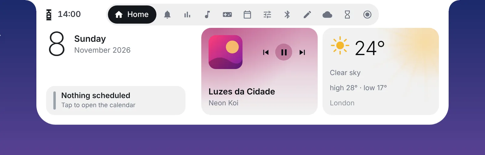
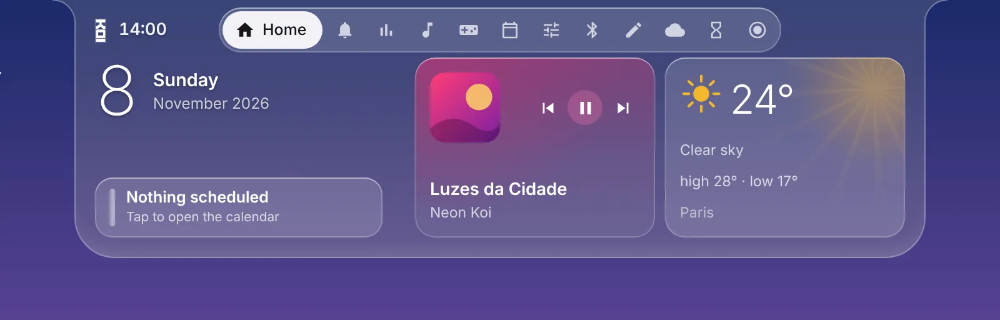
- Automatic follows the Windows theme
- Accent color for buttons and tabs, with automatic contrast
- Adjustable background transparency
- Color and light effect for each alert type
Minimal mark
Just the numbers, over your game.
Turn on the minimal mark and the island becomes a thin line at the top, with FPS, usage and temperatures in a small panel. Outside games, it shows the song that's playing.
- Live FPS while you play
- CPU, GPU and RAM with temperatures
- Text color of your choice
- Hover and the island opens as usual
Lightweight
Built to stay out of your game's way.
System readings run in a native helper and animations go to the graphics card. Your CPU stays free for what matters.
1.2% while playing music
all processes combined
with 3× smaller spikes
Measured on an Intel Core i7-9700KF with an RTX 5070, Windows 11, using the island's own performance log. In full screen, the island hides.
What's new
What changed.
Download KOI Island.
Version 1.4.0 · 7 de novembro de 2026 · Windows 10 and 11 (64-bit)
FAQ
Common questions.
How much does it cost?
Nothing. KOI Island is free, with no ads and no account.
Windows showed a blue warning when I opened the installer. Is it safe?
That's SmartScreen, which shows up for new programs without a paid digital signature. Click More info and then Run anyway. To check the file, compare the SHA-256 code shown below the download buttons.
Why does it ask to run as administrator?
Only the FPS counter and CPU temperature need it, because they read protected Windows information. Without admin, everything else works normally.
Does it hurt gaming performance?
It shouldn't. It uses less than 1% of the CPU, hides when a game or video is in full screen and only turns on the FPS counter while you're playing.
Does my data leave my computer?
No. Everything is read and stays on your PC, including WhatsApp messages. The island only goes online for the weather forecast, holidays, and album covers and lyrics.
Installer or portable?
The installer creates a shortcut, starts with Windows and is best for everyday use. The portable version runs from any folder without installing, good for trying it out.
How do I update to a new version?
The island tells you when a new version is out. In Settings › About, click Update now: it downloads, installs and reopens, and your settings, notes and tiles stay the same.
Does it work with two monitors?
Yes. The island sits on your main Windows display.